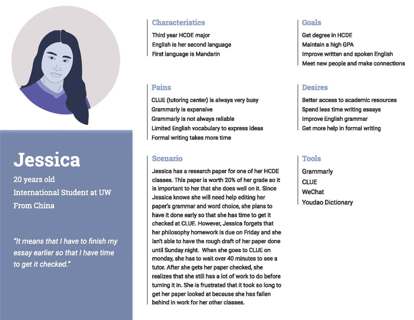
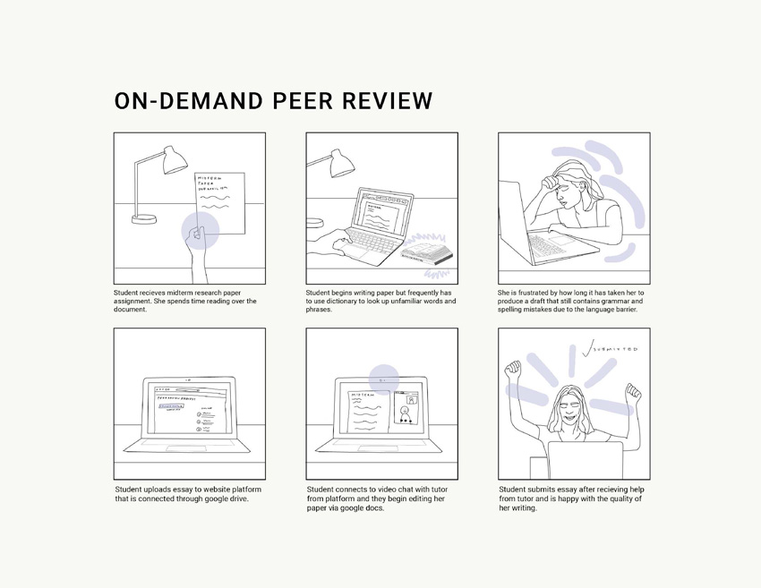

Peer2Peer
Course Work, 2019
This project was completed over the course of 9 weeks during the Spring 2019 quarter as part of an undergraduate class in Human Centered Design and Engineering at the University of Washington. My group and I selected international students at UW who speak English as their second language to be our user group because we felt that the difficulties that some international students encounter were not adequately handled or given enough attention by the university. In order to approach and combat these issues, our team went through research, design, and prototyping to come up with a solution for our user group.
RESEARCH PHASE
Our research phase consisted of many different elements and methods. We first conducted semi-structured interviews, as well as contextual inquiry observational research. This enabled us to create personas as well as a user experience journey map. Our research allowed us to better understand our user group as well as identify pain points and eventually a design problem.
interviews
Each group member interviewed at least one potential user to better understand their needs and pain points as undergraduate international students at University of Washington whose second language is English.
Interview 1: Interviewee 1 is a 20 year old female international student at
University of Washington. She is majoring in Human Centered design and Engineering
and is originally from Shenzhen, China. Her first languages are Mandarin and
Cantonese, and she began learning English in Elementary school. Her first time being
completely immersed in an English speaking country was when she first came to the
University of Washington.
Interview 2: Interviewee 2 is a 21 year old male. He is an international
student at the University of Washington studying interaction design. He moved to the
United States 4 years ago from China. He began learning English in Elementary school.
Before moving to the US, he studied reading and writing but there was not something to
prepare him for everyday life conversations. In academic setting, he struggles the most
with formal writing in English.
Interview 3: Interviewee 3 is a 21 year old male. He is a 3rd year
international student at the University of Washington studying Environmental Science.
He is originally from the Philippines and his first language is Tagalog. He begun learning
English at the age of 6. He came to the United States three years ago. He knows
English very well in an academic setting, but struggles with English in a social setting.
Interview 4: Interviewee 4 is a 19 year old female. She is an international
student at the University of Washington. She is now a freshman who started to learn
English since high school, and both of her parents can’t speak English.
USER PERSONAS
After conducting our interviews and observations we developed two user personas for our user group. Pain points, commonalities, and scenarios identified in our interviews and observational study were merged together to build our user personas. These personas were created to represent the ideal user for our solution, they were used to build our user journey map and throughout the design process.
USER JOURNEY MAP
User journey map is a visualization of user experience based on what we currently know about our users through interviews and a contextual inquiry observation. We decided to do our journey map based on Jessica’s scenario and her difficulties in going to tutoring sessions for help in formal English writing. We realized that these pain points are what most of our interviewees have mentioned. The journey map has helped us focus on our users touch-points and emotions so later we understand better who we are designing for. The main takeaway that we got from our user journey map is that scheduling is an important factor that we should include in our design.
DESIGN REQUIREMENTS
Based on our previous research, we started to develop design requirements to determine what our platform should include in order to meet our users’ needs. These requirements led us define what features we wanted to include in our platform
Requirements:
Inclusive: International students are able to change the language settings
Intuitive: Easy to navigate around the pages and find what users are looking for. Includes a search bar and filtering options.
Inviting: Aesthetically pleasing so international students feel more comfortable interacting with platform.
Personalized: Users are able to create their own profile page and add information about themselves.
STORYBOARDS
Storyboards are used to show an experience or interaction using narrative and images. Each of our group members individually created two storyboard to convey different stories and experiences of our international student users in their academic career. These storyboards have helped us think of various design solutions and come up with the main features that we would like to include in our platform.
my storyboard
How might we create a more efficient and effective peer tutoring system for international students to receive help on essays and academic writing assignments? This concept incorporates specifically tailored peer support as well as video chat and googledocs compatibility.
INFORMATION ARCHITECTURE
Information architecture diagram is a tool used to organize all components of a system to show the hierarchical relationship between those components. We used the diagram to connect all the features we wanted to include and to show the flow of the screens. At this stage, we realized that we would like to have separated user dashboards for ESL international students and peer helpers. We then included both user paths in our paper prototype.
PAPER PROTOTYPE
Paper prototypes are used to quickly sketch design ideas and test with potential users. This process has helped us determine the three main tasks of both our ESL students and peer helpers and then design the use interface for each task based on the previous information architecture.
EVALUATION
Using our paper prototype, we conducted user testing with potential users to test our three tasks to get their insights toward the experience . Based on what the potential users said, we made revisions to the design. These revisions were then showed on the annotated wire-frames which were higher fidelity then the paper prototypes.
ANNOTATED WIREFRAMES
According to the information architecture and the suggestions we got in the usability tests, we create our annotated wire-frames, which gives an overview of the functionality of our whole system, along with the annotations and transition diagram of the screen. With this, we finally determine the main pages for our high-fidelity mock-up.
HIGH-FIDELITY MOCK-UP
We create the high-fidelity mock-up to finalize our design. After the annotated wire-frame, we decide to focus on the student users’ dashboard, so we create the user interface of student’s homepage, requesting page, live session and “My Session” page.